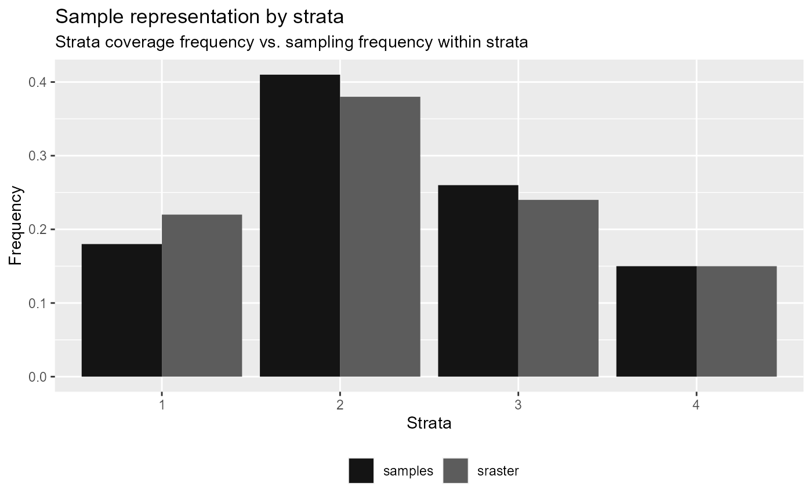
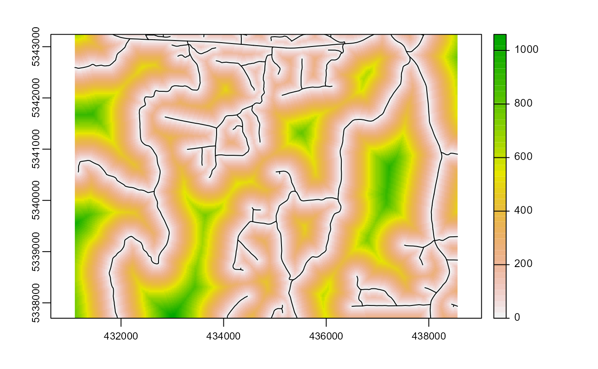
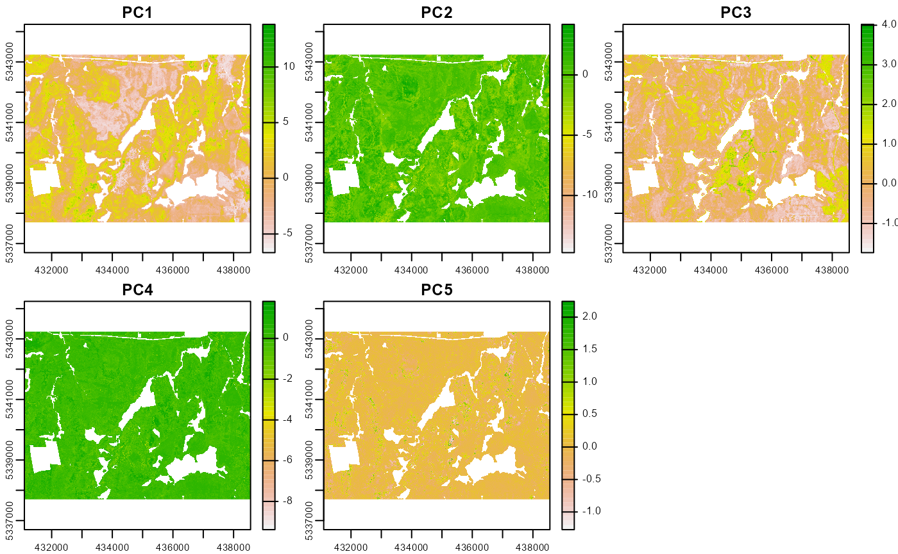

A total of 7 calculate functions currently exist in the
package:
calculate_distance()- per pixel distance to closest access vectorcalculate_pcomp()- principal components on inputmrastercalculate_sampsize()- Determine appropriate sample sizes based on relative standard error thresholdscalculate_allocation()- sample allocation algorithm - proportional / optimal / equal samplingcalculate_ahels()- Adapted hypercube evaluation of a legacy sample (ahels) algorithmcalculate_coobs()- Count of observations algorithmcalculate_lhsPop()- Population covariate statistics for latin hypercube samplingcalculate_lhsOpt()- Optimal latin hypercube sampling paramters including sample number
calculate_* functions serve as helper functions. In this
section we outline how these functions can be used.
calculate_distance
The calculate_distance() function takes input
raster and access data and outputs a per pixel
distance to the nearest access point. This function has particular value
for constraining sampling protocols such the sample_clhs()
function where the output raster layer can be used as a
cost constraint.The output raster is the input with the
calculated distance layer (dist2access) appended.
calculate_distance(raster = sraster, # input
access = access, # define access road network
plot = TRUE) # plot
#> class : SpatRaster
#> dimensions : 277, 373, 2 (nrow, ncol, nlyr)
#> resolution : 20, 20 (x, y)
#> extent : 431100, 438560, 5337700, 5343240 (xmin, xmax, ymin, ymax)
#> coord. ref. : UTM Zone 17, Northern Hemisphere
#> sources : memory
#> memory
#> names : strata, dist2access
#> min values : 1.000000000, 0.006621213
#> max values : 4.00, 1061.66
calculate_pcomp
The calculate_pcomp() function take a
mraster as input and perform principal component analysis.
The number of components defined by the nComp parameter
specify the number of components that should be rasterized to
output.
calculate_pcomp(mraster = mraster, # input
nComp = 5, # number of components to output
plot = TRUE, # plot
details = TRUE) # details about the principal component analysis appended
#> $pca
#> Standard deviations (1, .., p=7):
#> [1] 2.44489597 0.77330715 0.58694359 0.24601882 0.09755856 0.09617098
#> [7] 0.02617551
#>
#> Rotation (n x k) = (7 x 7):
#> PC1 PC2 PC3 PC4 PC5
#> zmean 0.4054171 0.11311676 -0.15821737 0.05228532 -0.24488701
#> pzabove2 0.3403673 0.15301222 0.92238481 0.07785750 0.05997885
#> zsd 0.3438175 -0.69466285 -0.04508043 -0.09258238 0.61028250
#> zq20 0.3523317 0.61345601 -0.22005777 -0.48739208 0.41346282
#> zq50 0.3982735 0.14758611 -0.21579187 0.56156385 0.13175420
#> zq70 0.4039445 -0.05545307 -0.16438966 0.36438073 -0.28451820
#> zq90 0.3945200 -0.28293182 -0.01121444 -0.54493544 -0.54288754
#> PC6 PC7
#> zmean -0.01489929 0.857253431
#> pzabove2 0.01677208 0.001756162
#> zsd 0.07596902 0.102045488
#> zq20 0.15378941 -0.137676849
#> zq50 -0.61264582 -0.254916462
#> zq70 0.70697577 -0.305272339
#> zq90 -0.30809836 -0.278516913
#>
#> $raster
#> class : SpatRaster
#> dimensions : 277, 373, 5 (nrow, ncol, nlyr)
#> resolution : 20, 20 (x, y)
#> extent : 431100, 438560, 5337700, 5343240 (xmin, xmax, ymin, ymax)
#> coord. ref. : UTM Zone 17, Northern Hemisphere
#> sources : memory
#> memory
#> memory
#> ... and 2 more source(s)
#> names : PC1, PC2, PC3, PC4, PC5
#> min values : -4.9718830, -5.5371690, -3.6678708, -2.3303431, -0.6698738
#> max values : 7.477925, 2.540762, 1.728753, 1.519315, 1.386004
calculate_sampsize
The calculate_sampsize() function allows users to
determine what an appropriate sample size would be using the relative
standard error of input metric. If an mraster with multiple
layers is provided, sample sizes will be determined for all layers. If
plot = TRUE and rse is defined, a sequence of
rse values will be visualized with indicators and a value for the
matching sample size.
#--- determine sample size based on relative standard error (rse) of 1% ---#
calculate_sampsize(mraster = mraster,
rse = 0.01)
#> nSamp rse var
#> 1 2756 0.01 zmean
#> 2 2065 0.01 pzabove2
#> 3 2563 0.01 zsd
#> 4 4478 0.01 zq20
#> 5 3360 0.01 zq50
#> 6 2850 0.01 zq70
#> 7 2060 0.01 zq90
#--- change default threshold sequence values ---#
#--- if increment and rse are not divisible the closes value will be taken ---#
p <- calculate_sampsize(mraster = mraster,
rse = 0.025,
start = 0.01,
end = 0.08,
increment = 0.01,
plot = TRUE)
#> 'rse' not perfectly divisible by 'incremenent.
#> Selecting closest sample size (rse = 0.03) based on values.
p
#> $nSamp
#> Registered S3 method overwritten by 'cli':
#> method from
#> print.boxx spatstat.geom
#> # A tibble: 7 x 3
#> # Groups: var [7]
#> nSamp rse var
#> <dbl> <dbl> <chr>
#> 1 314 0.03 zmean
#> 2 234 0.03 pzabove2
#> 3 292 0.03 zsd
#> 4 518 0.03 zq20
#> 5 385 0.03 zq50
#> 6 325 0.03 zq70
#> 7 233 0.03 zq90
#>
#> $plot
calculate_allocation
The calculate_allocation() function calculates the total
number of samples that should be allocated for sampling based on a total
sample value (nSamp) and an input sraster.
This function is utilized in a number of functions including sample_strat. Three methods for
allocation are currently included: proportional (prop;
default), optimal (optim) allocation, and equal
(equal) allocation.
- Proportional - Samples are allocated based on the area coverage of strata. This is the default method.
- Optimal - Samples are allocated based on the within strata variation.
- Equal - The same number of samples (
nSamp) are allocated to each strata.
Proportional allocation
#--- perform grid sampling ---#
calculate_allocation(sraster = sraster,
nSamp = 200)
#> strata total
#> 1 1 47
#> 2 2 45
#> 3 3 58
#> 4 4 50
#--- calculate existing samples to include ---#
e.sr <- extract_strata(sraster = sraster,
existing = existing)
calculate_allocation(sraster = sraster,
nSamp = 200,
existing = e.sr)
#> strata total need
#> 1 1 2 47
#> 2 2 2 45
#> 3 3 4 58
#> 4 4 -8 50Notice that some of the results in total above are
negative. This indicates that the existing samples over
represent those strata and that some samples should be removed to avoid
over representation. The number that should be added/removed is details
in $total.
Optimal Allocation
Optimal allocation utilizes within strata metric variation to
allocate samples. This means that in addition to providing and
sraster, that a specific metric (mraster) must
be provided to calculate variation to optimally allocate samples.
calculate_allocation(sraster = sraster, # stratified raster
nSamp = 200, # desired sample number
existing = e.sr, #existing samples
allocation = "optim", # optimal allocation
mraster = mraster$zq90, # metric raster
force = TRUE) # force nSamp number
#> strata total need
#> 1 1 13 58
#> 2 2 2 45
#> 3 3 -6 48
#> 4 4 -9 49Equal allocation
There may be an instance where a user wants to have the same number
of samples allocated to each strata. In this case using
allocation = equal is ideal. In this instance,
nSamp relates to the total number of samples per strata
rather than the total number of samples overall.
calculate_allocation(sraster = sraster, # stratified raster
nSamp = 20, # desired sample number
allocation = "equal") # optimal allocation
#> # A tibble: 4 x 2
#> strata total
#> <dbl> <dbl>
#> 1 1 20
#> 2 2 20
#> 3 3 20
#> 4 4 20That yields a total of 80 samples (20 nSamp for each of
the 4 strata in sraster.)
Sample evaluation algorithms
The following algorithms were initially developed by Dr. Brendan Malone from the University of Sydney. In their work they graciously provided an in depth description of the functionality of these algorithms that were originally developed to improve soil sampling strategies. These functions have been modified and implemented so they can be used for structurally guided sampling approaches. Many thanks to Dr. Malone for being an excellent collaborator and proponent of open source algorithms.
Please consult the original reference for these ideas and scripts as they are extremely valuable and helpful for understanding their sampling rationale.
Malone BP, Minansy B, Brungard C. 2019. Some methods to improve the utility of conditioned Latin hypercube sampling. PeerJ 7:e6451 DOI 10.7717/peerj.6451
calculate_coobs
The calculate_coobs() function perform the COunt of
OBServations (coobs) algorithm using existing sample data
and mraster covariates. This algorithm aids the user in
understanding how an existing sample data set is
distributed among the landscape with relation to mraster
covariates. The output coobs raster could be used to constrain clhs
sampling using the sample_clhs() to areas that are under
reprented.
The coobs raster determines how many observations are similar in terms of the covariate space at every pixel.This fucntion takes advantage of parallel processing routines.
calculate_coobs(mraster = mraster, # input
existing = existing, # existing samples
cores = 4, # parallel cores to use
details = TRUE, # provide details from algorithm output
plot = TRUE, # plot
filename = tempfile(fileext = ".tif")) # write output raster to tifLatin hypercube sampling evaluation algorithms
The following 2 algorithms provide a means to maximize the effectiveness of latin hypercube sampling protocols.
calculate_lhsPop
The calculate_lhsPop() function calculates population
level statistics about the mraster covariates being used
including calculating principal components, quantile & covariate
distributions, and Kullback–Leibler divergence testing. The outputs from
this function are mandatory for use of the
calculate_lhsOpt() function described in the next
section.
#--- by default all statistical data are calculated ---#
calculate_lhsPop(mraster = mraster) # input The output details the following:
$values- Pixel values frommraster$pcaLoad- PCA loadings$matQ- Quantile matrix$matCov- Covariate matrix
#--- statistical analyses can be chosen by setting their parameter to `FALSE` ---#
calculate_lhsPop(mraster = mraster, # input
nQuant = 10, # desired number of quantiles
PCA = FALSE) # choose not to calculate PCA's
calculate_lhsOpt
The calculate_lhsOpt() function performs a bootsrapped
latin hypercube sampling approach where a population level analysis of
mraster data is performed to determine the optimal Latin
hypercube sample size.
Using statistical data calculated using the
calculate_lhsPop() and varying sample sizes defined by
minSamp, maxSamp, step and
rep. Sampling protocols are conducted and statistical
effectiveness of those sampling outcomes are evaluated to determine
where sample size is minimized and statistical representation is
maximized.
#--- calculate lhsPop details ---#
poplhs <- calculate_lhsPop(mraster = mr)
calculate_lhsOpt(popLHS = poplhs)
calculate_lhsOpt(popLHS = poplhs,
PCA = FALSE,
iter = 200)